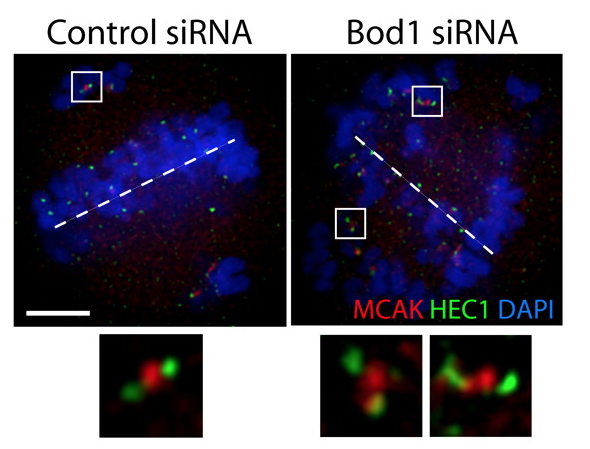

ROIs in OMERO.web
Tuesday Group Meeting
18th August, 2015
Will Moore
Talk outline
- Current state of ROI support
- Use cases:
- ROI Annotations
- Large ROI counts
- Editing of ROIs in webclient
- Adding ROIs to OMERO.figure
- Others? (3D ROIS ?!)
- Current work: Shape Editor
- Next: Shape Editor | OMERO.figure | webclient
Current state of ROI support
- Show ROI count in general pane
- In image viewer we load all ROIs as json on "Show ROIs"
- All Shapes shown in table (and ROIs if >1 shape)
- Shapes are shown on image for currently selected plane
- Click shape in table -> shown in viewer
- NO creating or editing of ROIs or Shapes
- Filter Shapes & Load external ROIs (CRS4)
Use Case: ROI Annotations
- Teaching applications: CRS4 & Virtual Microscope
- Need different categories (namespaces?) of Shapes
- Annotations have name, description? etc?
- Linked to external resources / terms E.g. Ontology
- Filter by type, owner, etc?
- First question: use Tags, Map Annotations or something else?
Use Case: Large ROI counts
- Loading ALL ROIs & shapes for image fails if there are too many
- Could load shapes for current plane only (for multi-plane images)
- For even larger numbers, might need to load by region or
render shapes on tiles - Editing ROIS & shapes is harder, but probably not needed?
Use Case: Create shapes in web
- Need to support same use-cases as in Insight
- But, room for improvement of usability
- No restriction on 1 shape per plane per ROI
- Create new shapes with chosen Color, Line thickness etc
- While creating shapes, allow tweaking of last-added shape
- No support for 'smooth' shapes & Arrows
- ImageJ can serve as useful example of what users want
Use Case: Adding shapes to OMERO.figure...
- Much requested by users: E.g. /issues/79


...Adding shapes to OMERO.figure
- Don't need "ROI" support - just need "shapes"
- Shapes on figures tend to have NO fill (outline only)
- Want to add shapes from OMERO onto figures, AND draw shapes in figure
- 2 Use cases:
- 'Page' shapes - Drawn across whole page
- 'Panel' shapes - Attached to image panel
- Copy and paste a 'crop' region -> Rectangle and vice versa
- Need to be able to export shapes to PDF & TIFF figures
- Image panel rotation will be tricky (not supported)?
Getting Started: Editing shapes
- Couldn't find an existing shape editing library with desired functionality. E.g:
- Decided to try creating a toolkit using Raphael.js (as in webclient ROIs and OMERO.figure panel selection)...
Shape Editor
- In order to support shapes in OMERO.figure (and webclient?), started working on shape-editor-js
- Handles shapes only (No ROIs)
- Currently only supports Line, Arrow, Rectangle, Ellipse.
- Poly-lines etc to come later
- No shape fill colors (transparent)
- Followed ImageJ behaviour for creation & tweaking of shapes
Next Tasks: OMERO.figure
- Integrate Shape Editor into OMERO.figure (Done)
- Export of shapes on PDF and TIFF figures
- Import of shapes from OMERO
- Copy & Paste of shapes / crop-regions etc
Next Tasks: Shape Editor
- Fix model - E.g. 'lineWidth' -> 'strokeWidth'
- Polygon & Freehand shapes
- Any need for Polyline or other shapes?
- Dashed lines
- Support for rotated images?!?
Next Tasks: ROI editing in webclient?
- Quick test of using shape-editor-js in webclient
- Only just started, but seems to work quite well...
Saving ROIS/shapes to OMERO
- Can save 'Arrow' to OMERO with line.markerStart = 'Arrow' but not supported in Insight
- Can save a 'Polygon' but can't distinguish it from 'Freehand' shape
- Use shape.strokeDashArray for dashed shapes. Insight support?